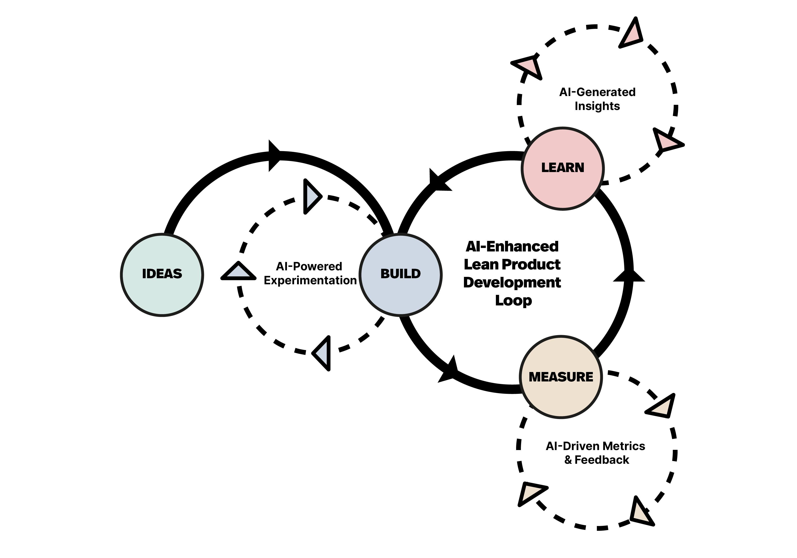

Leading with Intent, in the Age of AI
Agenda
Ice Breaker
10 MIN
Recap: Connecting the Dots
3 MIN
Agile Leadership: Leading with Intent
15 MIN
Agile Principles in the Age of AI
26 MIN
Next Steps & Commitments
5 MIN
1 Truth and 1 Lie
Right after lunch, so let's get up and move. Form groups of three. Two statements, about yourself or about MOLIT: one true, one invented, and your trio has to spot which is which.
1 Truth, 1 Lie
Think of two statements, about yourself or about MOLIT: one true, one invented.
Round Robin
Stand up, form a trio, each person shares their two statements in turn, the other two guess which one is the lie.
What Gave It Away?
Quick show of hands: who spotted a lie in their trio? A few laughs before we dive in.
Connecting the Dots
Session I's poll: 8 of you wanted to cascade these themes to delivery teams, 5 wanted more detail for executive oversight. Both paths run through the same model you named yourselves — the Westrum culture types.
| STRATEGIC DIMENSION | PATHOLOGICAL (POWER-ORIENTED) | BUREAUCRATIC (LEGACY: PROJECT MINDSET) | GENERATIVE (TARGET: PRODUCT MINDSET) |
|---|---|---|---|
| Risk & Feedback Uncertainty management |
Concealment Failures are hidden. Leaders only hear "it is green" until deployment collapse. | Avoidance via Planning Heavy upfront specifications are treated as risk mitigation. | Risk Hedging via Flow Small increments deployed early and often to users. |
| Response to Failure How mistakes are met |
Shooting the Messenger Delays are blamed on individuals, driving risk underground. | Justice & Audits Delays lead to post-mortems, heavier approval loops, more rules. | System Inquiry Leaders improve safety nets and automate future prevention. |
| Org & Sourcing Team design |
Resource Hoarding Silos protect headcounts, vendors blamed when timelines slip. | Fragmented Matrix Pools Siloed resources lent to projects, dissolved post-deployment. | Stable Domain Ownership Cross-functional teams continuously own a product domain end-to-end. |
Today we make it real: the leadership model that actually builds Generative Culture.
Leading with Intent
Captain David Marquet took command of the USS Santa Fe, the worst-performing submarine in the fleet, and changed one thing: he stopped giving orders and started asking his crew to state their intent.
That single shift, from a leader-follower model to a leader-leader model, took the Santa Fe from worst to first in the Navy.
"Greatness", Inno-Versity's animated adaptation of Marquet's talk, ~6 min
Click "Play Embedded Clip" to start
This Is Not a New Idea for You
Give Control, Not Take Control
Marquet's crew stopped asking "what should I do?" and started saying "I intend to..." The default became action, with a leader free to intervene, rather than silence until permission arrived.
Total Ownership & Culture Guardians
Our own engagement already describes MOLIT PEARL leadership as owning execution outright and defending the way of working under pressure. That is the leader-leader model, in our own words.
The video is not a new framework. It is confirmation of the direction we have already set.
A quick poll on what matters most as AI and humans start working together, live on your phones.
👉 Go to menti.com
8740 6664Iterating on Value, Not Defending a Plan
AI raises how fast a team can produce a plan, a document, or a line of code. It says nothing about whether that output is the right one. Speed without the willingness to revise just produces more of the wrong thing, faster.
Our own hub.AI and Alignship programmes prove this in real time: both spent extended periods in fluid, unsettled states of development, not from poor planning, but because the team refused to lock in scope until value itself was clearly defined.
That discipline is exactly what will move hub.AI toward even greater heights, and what is now letting Alignship find its real shape instead of defending an early guess.

Fast Feedback, Not Big-Bang Planning
A wrong plan executed at AI speed is still wrong, just sooner and at greater cost. Session I called this the Ferrari engine in a wooden cart: engineering speed jumped to seconds, but governance and feedback did not follow.
The Ferrari engine is the AI-accelerated build. Fast feedback loops are what rebuild the wooden cart underneath it, governance and review that can keep pace with the new speed.
Empowered Teams, Not Command-Control
Teams closest to the AI-assisted work need the authority to stop, question, and adjust it directly. That authority operates inside the organization's AI policy and governance structure, that boundary is set. But once inside it, that is where leadership intervention should stop.
This is the leader-leader model from earlier today, applied to AI-assisted delivery: state your intent, act, and let a leader intervene only if needed, rather than wait for permission first. The same shift that took the Santa Fe from worst to first is what lets a team actually keep pace with AI-assisted work.